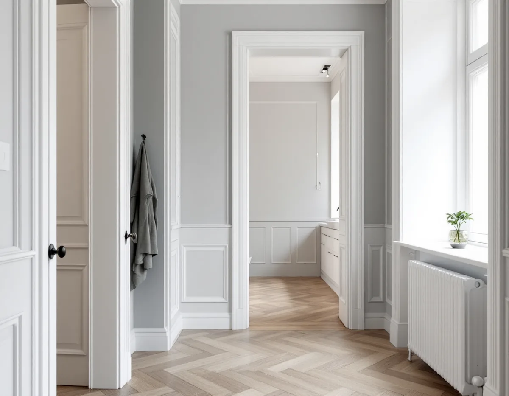
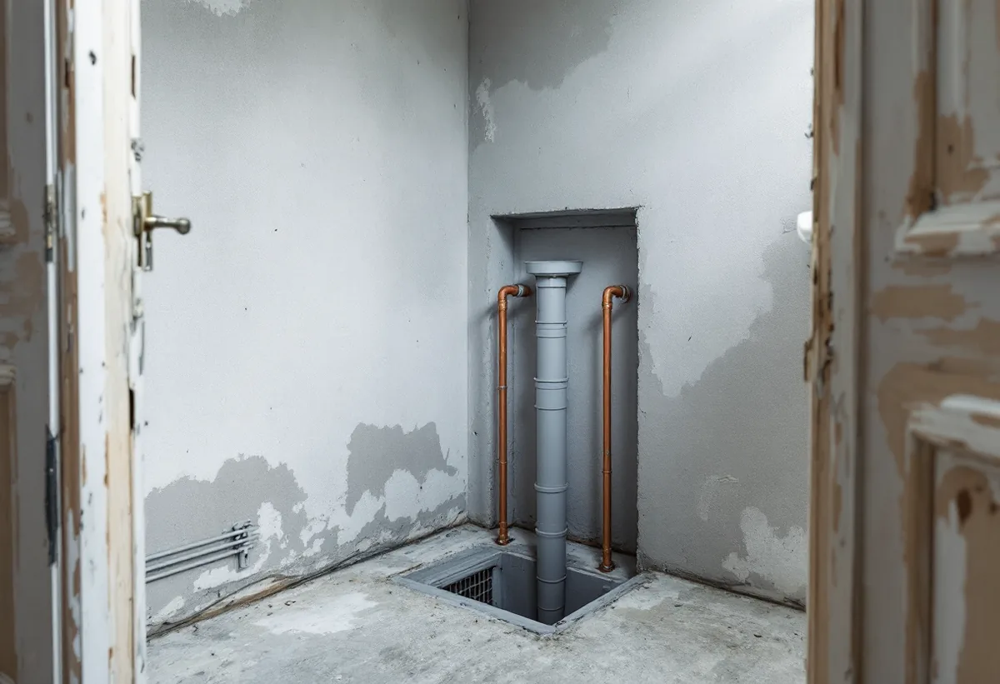
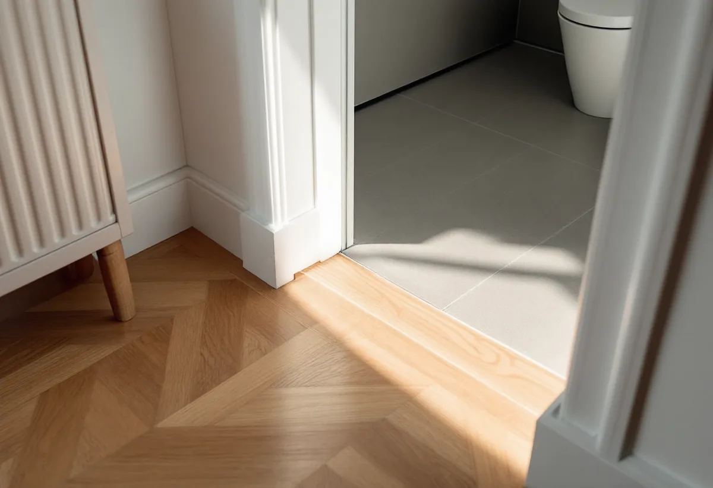

Platsbesök
Vi går igenom lägenheten och vad du vill ändra i badrum, kök och planlösning.
Står föreningen inför ett stambyte kan det vara klokt att låta totalrenoveringen av lägenheten följa samma tidplan. Geal Entreprenad AB totalrenoverar bostadsrätter på Södermalm och planerar arbetet i lägenheten så att det går ihop med det föreningen gör i husets stammar.

Stadens områdesfakta för Södermalms stadsdelsområde visar 77 525 bostäder år 2025. Av dem är 43 680 bostadsrätter, och nästan alla ligger i flerbostadshus och övriga hus. Bara 211 bostäder finns i småhus. I flerbostadshusen är två rum och kök den vanligaste storleken, med 21 466 lägenheter.
En totalrenovering på Södermalm gäller alltså i regel en lägenhet i ett hus där vatten- och avloppsstammarna går genom flera lägenheter. När föreningen planerar ett stambyte öppnas badrum och kök i hela huset, och då kan det vara läge att göra om resten av lägenheten i samma period i stället för att riva upp nya ytor två gånger.

Stockholms stad skriver att ett stambyte oftast innebär att befintliga installationer byts ut i samma läge, och då behövs ingen anmälan. En anmälan och ett startbesked krävs däremot om VA-stammarna placeras i nya lägen eller om stambytet innebär väsentliga ingrepp i byggnadens bärande konstruktion. Är du osäker om bärande delar berörs råder staden dig att kontakta en konstruktör. Oavsett anmälningsplikt ska arbetet följa reglerna för arbeten i våtrum och för vatteninstallationer.
För din del av planen betyder det att placeringen av badrum och kök bör vara bestämd innan föreningen låser sin projektering. Vill du flytta badrummet så att en stam hamnar i ett nytt läge blir det en anmälningspliktig ändring, och staden skriver att du inte får börja innan startbesked har getts. Ta därför upp önskemålen med styrelsen så tidigt som möjligt, och informera gärna grannarna om vad du planerar.
Staden skiljer också mellan ändring och ombyggnad. Vid en ändring gäller anmälan bara den del av byggnaden som ändras. Vid en ombyggnad förnyas hela eller en betydande och avgränsbar del av byggnaden på ett påtagligt sätt, och då gäller ansökan eller anmälan hela byggnaden. Vid en sådan ombyggnad av ett befintligt flerbostadshus, där installationerna för tappvarmvatten nyinstalleras eller ändras väsentligt, ska individuell mätning och debitering av varmvattnet installeras. Det är föreningens fråga, men bra att känna till när ditt badrum och kök ritas.
Staden påpekar att tillgängligheten inte får försämras vid ett stambyte. Som exempel på försämrad tillgänglighet nämns att golven i wc eller badrum höjs, att inredning placeras på ett olämpligt sätt eller att dörröppningar blir för smala.
I praktiken är det ofta golvet som är svårast. Nytt tätskikt, golvvärme och fall mot golvbrunnen ska rymmas utan att tröskeln mot hallen blir ett hinder. Därför ritar vi badrummet i lägenhetens helhet: dörrbredder, golvnivåer i angränsande rum och var tvättmaskin och dusch ska stå. När hela lägenheten ändå görs om kan golvnivåerna i hall och badrum planeras samtidigt i stället för att anpassas i efterhand.
I en bostadsrätt ger Skatteverket rotavdrag för arbete innanför lägenhetens tak, väggar och golv som du ansvarar för enligt stadgarna. Det gäller till exempel att dra vatten- och avloppsledningar som tjänar bostaden, byta golvbrunn, installera blandare och sätta kakel och klinker. Att utföra stambyten, flytta eller byta ut avloppsrör eller flytta golvbrunnen ger däremot inget avdrag.
Gränsen mellan föreningens beställning och din blir därför viktig. I vårt kostnadsförslag står det du själv beställer för sig, så att det går att se vad som kan ge rotavdrag. Om badrummet och ansvaret vid vattenskador finns mer under badrumsrenovering på Södermalm, om köket under köksrenovering på Södermalm, om snickerier under snickare på Södermalm och om större renoveringar på sidan om villarenovering.

Vi går igenom lägenheten och vad du vill ändra i badrum, kök och planlösning.
Föreningens tidplan för stambytet och gränsen mellan föreningens och ditt arbete.
Det du själv beställer redovisas för sig, med arbete och material åtskilda.
Hamnar en stam i nytt läge görs en anmälan och vi inväntar startbesked.
Lägenheten byggs om i takt med stambytet, med skyddade trapphus och ytor.
Vi går igenom lägenheten rum för rum tillsammans med dig, med badrum, kök och golvnivåer.
Rotavdraget i en bostadsrätt gäller bara arbete inne i lägenheten som du ansvarar för enligt föreningens stadgar. Stambyten och flyttade avloppsrör eller golvbrunnar ger inget avdrag, även om de görs samtidigt som din renovering.
Företaget får dra av högst 30 procent av arbetskostnaden på fakturan. Rotavdraget är högst 50 000 kr per person och år och högst 75 000 kr tillsammans med rutavdrag. Material och resor ger inget avdrag. Geal drar avdraget direkt på fakturan.
Hur mycket av lägenheten som görs om, om badrum eller kök flyttas, hur arbetet samordnas med föreningens stambyte och vilken standard du väljer påverkar mest. Arbetar föreningens entreprenör och vi i samma lägenhet bestäms ordningen mellan momenten i förväg. Efter ett gratis platsbesök får du ett skriftligt kostnadsförslag.
Renovera hela huset eller lägenheten.
Villarenovering →Takbyte, takbesiktning och plåtarbeten.
Takläggare på Södermalm →Stenstad, storgårdskvarter och bergen.
Takrenovering på Södermalm →Vattenskador, ansvar och husens olika åldrar.
Badrumsrenovering på Södermalm →Inreda vinden till bostäder.
Byggföretag på Södermalm →Putsen mot gatan.
Fasadmålning på Södermalm →Kalkputs, kalkfärg och plåt på lister.
Fasadrenovering på Södermalm →Föreningar, gatufasad och gårdsfasad.
Fönsterbyte på Södermalm →Föreningens fönster, besiktigade före beslut.
Fönsterrenovering på Södermalm →Renovera, riva och sortera golvet.
Golvläggare på Södermalm →Slipa golven i den nyköpta lägenheten.
Golvslipning på Södermalm →Kokvrå, gasspis och kulturvärden i lägenheten.
Köksrenovering på Södermalm →Äldre färglager, bättring och provytor.
Målare på Södermalm →Takkupor, vindar och äldre tak.
Plåtslagare på Södermalm →Nytt tak på föreningens eller hyresvärdens hus.
Takbyte på Södermalm →Ny tapet och gamla tapetlager.
Tapetsering på Södermalm →Väggar, dörrar och förvaring i lägenhet.
Snickare på Södermalm →